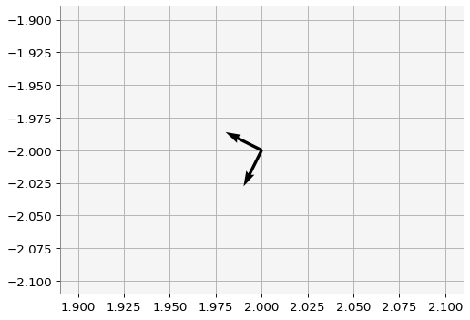
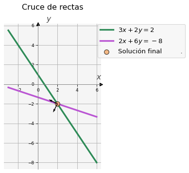
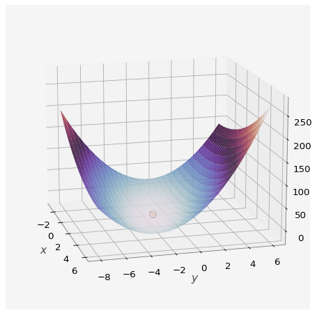
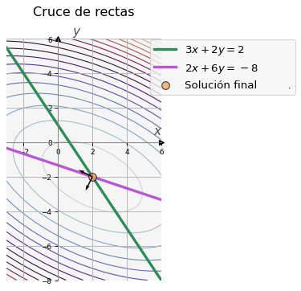
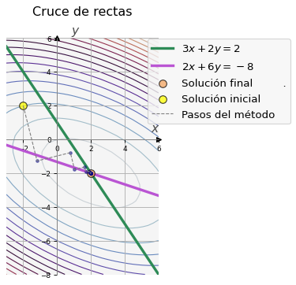
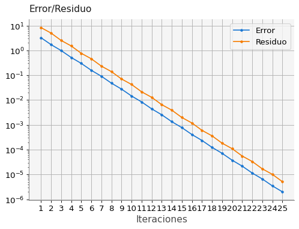
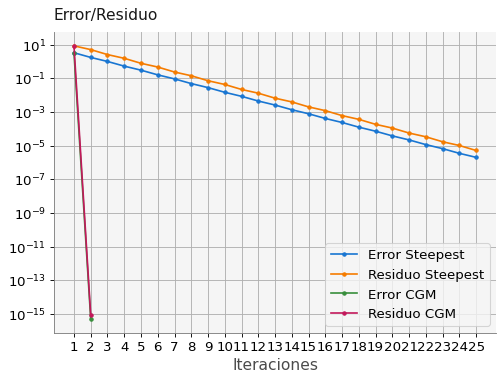
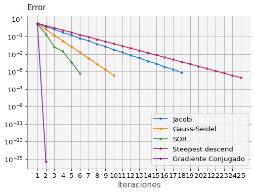

import numpy as np
import ipywidgets as widgets
import macti.visual as mvis
import macti.matem as mmat8 Descenso del gradiente y Gradiente Conjugado.
Objetivo.
Describir e implementar los métodos de descenso del gradiente y de gradiente conjugado para la solución de sistemas de ecuaciones lineales.
MACTI-Algebra_Lineal_01 by Luis M. de la Cruz is licensed under Attribution-ShareAlike 4.0 International


Trabajo realizado con el apoyo del Programa UNAM-DGAPA-PAPIME PE101922
La siguiente función será usada para graficar algunos resultados.
def grafica(x, y1, y2, sol = [], xs = [], ys = [], vA = [], xg = [], yg = [], z = []):
"""
Esta función grafica las líneas rectas, la solución, los pasos y los eigenvectores.
"""
v = mvis.Plotter(1,1,[dict(aspect='equal')],title='Cruce de rectas')
v.set_coordsys(1)
# Graficamos las líneas rectas
v.plot(1, x, y1, lw = 3, c = 'seagreen', label = '$3x+2y=2$') # Línea recta 1
v.plot(1, x, y2, lw = 3, c = 'mediumorchid', label = '$2x+6y=-8$') # Línea recta 2
if len(sol):
# Graficamos la solución
v.scatter(1, sol[0], sol[1], fc='sandybrown', ec='k', s = 75, alpha=0.75, zorder=5, label='Solución final .') # Solución
if len(xs) and len(ys):
# Graficamos los pasos
v.scatter(1, xs[0], ys[0], fc='yellow', ec='k', s = 75, alpha=0.75, zorder=8, label='Solución inicial')
v.scatter(1, xs[1:], ys[1:], c='navy', s = 10, alpha=0.5, zorder=8)
v.plot(1, xs, ys, c='grey', ls = '--', lw=1.0, zorder=8, label='Pasos del método')
if len(vA):
# Graficamos los eigenvectores
v.quiver(1, [sol[0], sol[0]], [sol[1], sol[1]], vA[0], vA[1], scale=10, zorder=9)
if len(xg) and len(yg) and len(z):
v.contour(1, xg, yg, z, levels = 25, cmap='twilight', linewidths=1.0, zorder=1)
v.legend(ncol = 1, frameon=True, loc='best', bbox_to_anchor=(1.90, 1.02))
v.grid()
v.show()8.1 Ejemplo 1. Cruce de líneas rectas.
Las siguientes dos rectas se cruzan en algún punto.
\[ \begin{array}{ccc} 3x + 2y & = &2 \\ 2x + 6y & = &-8 \end{array} \]
Las ecuaciones de las rectas se pueden escribir como:
\[ \begin{array}{ccc} \dfrac{3}{2}x + y & = & 1 \\ \dfrac{2}{6}x + y & = & -\dfrac{8}{6} \end{array} \Longrightarrow \begin{array}{ccc} y = m_1 x + b_1 \\ y = m_2 x + b_2 \end{array} \text{ donde } \begin{array}{ccc} m_1 = -\dfrac{3}{2} & b_1 = 1 \\ m_2 = -\dfrac{2}{6} & b_2 = -\dfrac{8}{6} \end{array} \]
Las ecuaciones de las rectas se pueden escribir en forma de un sistema lineal:
\[ \left[ \begin{array}{cc} 3 & 2 \\ 2 & 6 \end{array} \right] \left[ \begin{array}{c} x_{0} \\ x_{1} \end{array} \right] = \left[ \begin{array}{c} 2 \\ -8 \end{array} \right] \tag{1} \]
Podemos calcular el cruce de las rectas resolviendo el sistema lineal:
# Dominio
x = np.linspace(-3,6,10)
# Línea recta 1
m1 = -3/2
b1 = 1
y1 = m1 * x + b1
# Línea recta 2
m2 = -2/6
b2 = -8/6
y2 = m2 * x + b2
# Definimos el sistema de ecuaciones lineales
A = np.array([[3, 2],[2,6]] )
b = np.array([2,-8])
print("Matriz A : \n",A)
print("Vector b : \n", b)
# Resolvemos el sistema
sol = np.linalg.solve(A,b)
print("Solución del sistema: ", sol)
# Usamos la función grafica() para mostrar las rectas y la solución
grafica(x, y1, y2, sol)Matriz A :
[[3 2]
[2 6]]
Vector b :
[ 2 -8]
Solución del sistema: [ 2. -2.]En general, un sistema de ecuaciones de \(n \times n\) se escribe como sigue:
\[ \begin{array}{ccccccc} a_{11}x_1 & + & a_{12}x_2 & + \dots + & a_{1n}x_n & = & b_1 \\ a_{21}x_1 & + & a_{22}x_2 & + \dots + & a_{2n}x_n & = & b_2 \\ \vdots & & \vdots & & \vdots & & \vdots \\ a_{i1}x_1 & + & a_{i2}x_2 & + \dots + & a_{in}x_n & = & b_i \\ \vdots & & \vdots & & \vdots & & \vdots \\ a_{n1}x_1 & + & a_{n2}x_2 & + \dots + & a_{nn}x_n & = & b_n \end{array} \]
Es posible usar métodos más eficientes que el de Jacobi, Gauss-Seidel y SOR para resolver este tipo de sistemas. A continuación veremos los métodos del descenso del gradiente y método de gradiente conjugado.
9 Métodos del subespacio de Krylov
Una excelente referencia para comenzar con estos métodos es la siguiente:
Shewchuk, J. R. (1994). An Introduction to the Conjugate Gradient Method Without the Agonizing Pain. Carnegie-Mellon University. Department of Computer Science.
9.1 Cálculo de eigenvectores
Los eigenvalores y eigenvectores de una matriz son herramientas muy útiles para entender ciertos comportamientos. Una descripción la puedes ver en la notebook 05_Matrices_Normas_Eigen.ipynb. Los eigenvalores y eigenvectores se pueden calcular como sigue:
# Usando la función np.linalg.eig()
np.linalg.eig(A) # w: eigenvalues, v: eigenvectorsEigResult(eigenvalues=array([2., 7.]), eigenvectors=array([[-0.89442719, -0.4472136 ],
[ 0.4472136 , -0.89442719]]))La función eigen_land() de la biblioteca macti utiliza la función np.linalg.eig() para ofrecer una salida más entendible:
# Usando la función eigen_land() de macti
wA, vA = mmat.eigen_land(A)eigenvalores = [2. 7.]
eigenvectores:
[-0.89442719 0.4472136 ]
[-0.4472136 -0.89442719]
ángulo entre eigenvectores = 90.0Los eigenvectores se pueden visualizar, cuando la matriz es de \(2\times2\):
# Graficamos los eigenvectores
xv = np.array([[sol[0], sol[0]],
[sol[1], sol[1]]])
v = mvis.Plotter()
v.quiver(1, xv[0], xv[1], vA[0], vA[1], scale=10, zorder=6)
v.grid()
v.show()
Ahora usamos la función grafica() definida al principio de esta notebook para ver los eigenvectores y las líneas rectas:
# Usamos la función grafica() para ver los eigenvectores
grafica(x,y1,y2,sol,vA=vA)
9.2 Forma cuadrática
La forma cuadrática de un sistema de ecuaciones lineales, permite transformar el problema \(A \mathbf{x} = \mathbf{b}\) en un probema de minimización.
\[ f(\mathbf{x}) = \dfrac{1}{2} \mathbf{x}^T A \mathbf{x} - \mathbf{x}^T \mathbf{b} + \mathbf{c} \]
\[ A = \left[ \begin{array}{cc} 3 & 2 \\ 2 & 6 \end{array} \right], \mathbf{x} = \left[ \begin{array}{c} x_{0} \\ x_{1} \end{array} \right], \mathbf{b} = \left[ \begin{array}{c} 2\\ -8 \end{array} \right], \mathbf{c} = \left[ \begin{array}{c} 0\\ 0 \end{array} \right], \]
\[ f^\prime(\mathbf{x}) = \dfrac{1}{2} A^T \mathbf{x} + \dfrac{1}{2} A \mathbf{x} - \mathbf{b} \]
- Cuando \(A\) es simétrica: $ f^() = A - $
- Entonces un punto crítico de \(f(\mathbf{x})\) se obtiene cuando $ f^() = A - = 0$, es decir cuando \(A \mathbf{x} = \mathbf{b}\)
Calculemos la forma cuadrática para nuestro ejemplo:
# Función cuadrática
f = lambda A,b,c,x: 0.5 * x @ A @ x.T - x @ b.T + c
# Tamaño de la malla para graficar
size_grid = 30
xg, yg = np.meshgrid(np.linspace(-3,6,size_grid),
np.linspace(-8,6,size_grid))
# Arreglo para almacenar los valores de la función cuadrática
z = np.zeros((size_grid, size_grid))
# Cálculo
for i in range(size_grid):
for j in range(size_grid):
xc = np.array([[xg[i,j], yg[i,j]]])
z[i,j] = f(A,b,0,xc)/tmp/ipykernel_217/3515168418.py:16: DeprecationWarning: Conversion of an array with ndim > 0 to a scalar is deprecated, and will error in future. Ensure you extract a single element from your array before performing this operation. (Deprecated NumPy 1.25.)
z[i,j] = f(A,b,0,xc)Graficamos la forma cuadrática, almacenada en z, y la solución. Esta última debe estar en el mínimo de \(f(\mathbf{x})\).
axis_par = [dict(projection='3d', aspect='auto', xlabel = '$x$', ylabel = '$y$', zlabel = '$f$')]
v = mvis.Plotter(1,1, axis_par, dict(figsize=(8,6)))
v.plot_surface(1, xg, yg, z, cmap='twilight', alpha=0.90) # f(x)
v.scatter(1, sol[0], sol[1], fc='sandybrown', ec='k', s = 75, zorder=5, label='Solución')
v.axes(1).view_init(elev = 15, azim = -15)
Observamos un paraboloide cuyo mínimo es la solución del sistema. Esto es más claro si graficamos los contornos de \(f(\mathbf{x})\):
grafica(x, y1, y2, sol, vA = vA, xg = xg, yg = yg, z = z)
9.3 Algoritmo de descenso por el gradiente.
Este algoritmo utiliza la dirección del gradiente, en sentido negativo, para encontrar el mínimo y la solución del sistema:
$ \[\begin{array}{l} \text{Input} : \mathbf{x}_0, tol \\ \mathbf{r}_0 = \mathbf{b}-A\mathbf{x}_0 \\ k = 0 \\ \text{WHILE}(\mathbf{r}_k > tol) \\ \qquad \mathbf{r}_k \leftarrow \mathbf{b}-A\mathbf{x}_k \\ \qquad \alpha_k \leftarrow \dfrac{\mathbf{r}_k^T\mathbf{r}_k}{\mathbf{r}_k^T A \mathbf{r}_k} \\ \qquad \mathbf{x}_{k+1} \leftarrow \mathbf{x}_k + \alpha_k \mathbf{r}_k \\ \qquad k \leftarrow k + 1 \\ \text{ENDWHILE} \end{array}\]$
9.4 Implementación.
def steepest(A,b,xi, yi,tol,kmax):
# Solución inicial en forma de vector
x = np.array([xi, yi])
# Arreglos para almacenar los pasos.
xs, ys = [xi], [yi]
# Solución exacta
xe = np.array([2, -2])
r = b.T - A @ x
res = np.linalg.norm(r, 2)
res_list = []
error = []
k = 0
while(res > tol and k < kmax):
alpha = r.T @ r / (r.T @ A @ r)
x = x + r * alpha
xs.append(x[0])
ys.append(x[1])
r = b.T - A @ x
# Resido
res = np.linalg.norm(r, 2)
res_list.append(res)
# Error
e = np.linalg.norm(np.array([x[0], x[1]]) - xe, 2)
error.append(e)
k += 1
print('{:2d} {:10.9f} ({:10.9f}, {:10.9f})'.format(k, e, x[0], x[1]))
return x, np.array(xs), np.array(ys), error, res_list, k 9.5 Ejercicio 1.
Haciendo uso de la función steepest() definida en la celda anterior, aproxima la solución del sistema de ecuaciones del Ejemplo 1. Utiliza la solución inicial (xi, yi) = \((-2, 2)\), una tolerancia tol = \(1 \times 10^{-5}\) y kmax = \(50\) iteraciones. Utiliza las variables solGrad, xs, ys, eGrad, rGrad e itGrad para almacenar la salida de la función steepest(). Posteriormente grafica las rectas y cómo se va calculando la solución con este método. Utiliza la función grafica(). Grafica también el error y el residuo.
# Solución inicial (debe darse como un arreglo tipo columna)
# (xi, yi) = ...
# Método Steepest descend
# ...
### BEGIN SOLUTION
# Solución inicial
(xi, yi) = (-2., 2.)
tol = 1e-5
kmax = 50
# Método Steepest descend
solGrad, xs, ys, eGrad, rGrad, itGrad = steepest(A, b, xi, yi, tol, kmax)
#file_answer.write('1', solGrad, 'solGrad es incorrecta: revisa la llamada y ejecución de la función steepest() así como sus parámetros de entrada.')
#file_answer.write('2', eGrad[-1], 'eGrad[-1] es incorrecto: revisa la llamada y ejecución de la función steepest() así como sus parámetros de entrada.')
#file_answer.write('3', rGrad[-1], 'rGrad[-1] es incorrecto: revisa la llamada y ejecución de la función steepest() así como sus parámetros de entrada.')
#file_answer.write('4', itGrad, 'itGrad es incorrecto: revisa la llamada y ejecución de la función steepest() así como sus parámetros de entrada.')
### END SOLUTION 1 3.261835423 (-1.180722892, -1.277108434)
2 1.717502736 (0.785542169, -0.785542169)
3 0.990340394 (1.034286544, -1.780519669)
4 0.521458662 (1.631273044, -1.631273044)
5 0.300681662 (1.706795433, -1.933362598)
6 0.158322389 (1.888049165, -1.888049165)
7 0.091291300 (1.910978854, -1.979767921)
8 0.048068966 (1.966010108, -1.966010108)
9 0.027717358 (1.972971893, -1.993857248)
10 0.014594433 (1.989680177, -1.989680177)
11 0.008415391 (1.991793876, -1.998134972)
12 0.004431081 (1.996866753, -1.996866753)
13 0.002555034 (1.997508502, -1.999433750)
14 0.001345340 (1.999048701, -1.999048701)
15 0.000775745 (1.999243545, -1.999828078)
16 0.000408465 (1.999711172, -1.999711172)
17 0.000235528 (1.999770329, -1.999947802)
18 0.000124016 (1.999912308, -1.999912308)
19 0.000071510 (1.999930269, -1.999984152)
20 0.000037653 (1.999973375, -1.999973375)
21 0.000021711 (1.999978829, -1.999995188)
22 0.000011432 (1.999991916, -1.999991916)
23 0.000006592 (1.999993572, -1.999998539)
24 0.000003471 (1.999997546, -1.999997546)
25 0.000002001 (1.999998048, -1.999999556)#quizz.eval_numeric('1', solGrad)
#quizz.eval_numeric('2', eGrad[-1])
#quizz.eval_numeric('3', rGrad[-1])
#quizz.eval_numeric('4', itGrad)Gráfica de las rectas, la solución y los pasos realizados
grafica(x, y1, y2, sol, xs, ys, xg = xg, yg = yg, z = z)
Grafica del error y el residuo.
# Lista con el número de las iteraciones
l_itGrad = list(range(1,itGrad+1))
# Parámetros para los ejes
a_p = dict(yscale='log', xlabel='Iteraciones', xticks = l_itGrad)
# Gráfica del error
v = mvis.Plotter(1,1,[a_p])
v.axes(1).set_title('Error/Residuo', loc='left')
v.plot(1, l_itGrad, eGrad, marker='.', label='Error')
v.plot(1, l_itGrad, rGrad, marker='.', label='Residuo')
v.legend()
v.grid()
9.6 Algoritmo de Gradiente Conjugado
Este algorimo mejora al descenso del gradiente tomando direcciones conjugadas para evitar repetir un paso en una misma dirección.
$ \[\begin{array}{l} \text{Input} : A, \mathbf{b}, \mathbf{x}_0, k_{max}, tol \\ \mathbf{d_0} = \mathbf{r}_0 = \mathbf{b} - A \mathbf{x}_0 \\ k = 0 \\ \text{While} (||\mathbf{r}|| > tol \quad \text{AND} \quad k < k_{max} ) \\ \qquad \alpha_k = \frac{\mathbf{r}_k^T \mathbf{r}_k}{\mathbf{d}_k^T A \mathbf{d}_k} \\ \qquad \mathbf{x}_{k+1} = \mathbf{x}_{k} + \alpha_k \mathbf{d}_{k} \\ \qquad \mathbf{r}_{k+1} = \mathbf{r}_{k} - \alpha_k A \mathbf{d}_{k} \\ \qquad \beta_{k+1} = \frac{\mathbf{r}_{k+1}^T \mathbf{r}_{k+1}}{\mathbf{r}_{k}^T \mathbf{r}_{k}} \\ \qquad \mathbf{d}_{k+1} = \mathbf{r}_{k+1} + \beta_{k+1} \mathbf{d}_{k} \\ \qquad k = k + 1 \\ \text{End While} \end{array}\]$
9.6.1 Implementación.
def conjugateGradient(A,b,xi, yi, tol,kmax):
# Solución inicial en forma de vector
x = np.array([xi, yi])
# Arreglos para almacenar los pasos.
xs, ys = [xi], [yi]
# Solución exacta
xe = np.array([2, -2])
r = b.T - A @ x
d = r
rk_norm = r.T @ r
res = np.linalg.norm(rk_norm)
res_list = []
error = []
k = 0
while(res > tol and k < kmax):
alpha = float(rk_norm) / float(d.T @ A @ d)
x = x + alpha * d
xs.append(x[0])
ys.append(x[1])
r = r - alpha * A @ d
# Residuo
res = np.linalg.norm(r, 2)
res_list.append(res)
# Error
e = np.linalg.norm(np.array([x[0], x[1]]) - xe, 2)
error.append(e)
rk_old = rk_norm
rk_norm = r.T @ r
beta = float(rk_norm) / float(rk_old)
d = r + beta * d
k += 1
print('{:2d} {:10.9f} ({:10.9f}, {:10.9f})'.format(k, e, x[0], x[1]))
return x, np.array(xs), np.array(ys), error, res_list, k9.7 Ejercicio 2.
Haciendo uso de la función conjugateGradient() definida en la celda anterior, aproxima la solución del sistema de ecuaciones del Ejemplo 1. Utiliza la solución inicial (xi, yi) = \((-2, 2)\), una tolerancia tol = \(1 \times 10^{-5}\) y kmax = \(50\) iteraciones. Utiliza las variables solCGM, xs, ys, eCGM, rCGM e itCGM para almacenar la salida de la función conjugateGradient(). Posteriormente grafica las rectas y cómo se va calculando la solución con este método. Utiliza la función grafica(). Grafica también el error y el residuo.
# Solución inicial (debe darse como un arreglo tipo columna)
# (xi, yi) = ...
# Método CGM
# ...
### BEGIN SOLUTION
# Solución inicial
(xi, yi) = (-2., 2.)
tol = 1e-5
kmax = 50
# Método CGM
solCGM, xs, ys, eCGM, rCGM, itCGM = conjugateGradient(A, b, xi, yi, tol, kmax)
#file_answer.write('5', solCGM, 'solCGM es incorrecta: revisa la llamada y ejecución de la función conjugateGradient() así como sus parámetros de entrada.')
#file_answer.write('6', eCGM[-1], 'eCGM[-1] es incorrecto: revisa la llamada y ejecución de la función conjugateGradient() así como sus parámetros de entrada.')
#file_answer.write('7', rCGM[-1], 'rCGM[-1] es incorrecto: revisa la llamada y ejecución de la función conjugateGradient() así como sus parámetros de entrada.')
#file_answer.write('8', itCGM, 'itCGM es incorrecto: revisa la llamada y ejecución de la función conjugateGradient() así como sus parámetros de entrada.')
### END SOLUTION 1 3.261835423 (-1.180722892, -1.277108434)
2 0.000000000 (2.000000000, -2.000000000)#quizz.eval_numeric('5', solCGM)
#quizz.eval_numeric('6', eCGM[-1])
#quizz.eval_numeric('7', rCGM[-1])
#quizz.eval_numeric('8', itCGM)grafica(x, y1, y2, sol, xs, ys, xg = xg, yg = yg, z = z)# Lista con el número de las iteraciones
l_itGrad = list(range(1,itGrad+1))
l_itCGM = list(range(1,itCGM+1))
# Parámetros para los ejes
a_p = dict(yscale='log', xlabel='Iteraciones', xticks = l_itGrad)
# Gráfica del error
v = mvis.Plotter(1,1,[a_p])
v.axes(1).set_title('Error/Residuo', loc='left')
v.plot(1, l_itGrad, eGrad, marker='.', label='Error Steepest')
v.plot(1, l_itGrad, rGrad, marker='.', label='Residuo Steepest')
v.plot(1, l_itCGM, eCGM, marker='.', label='Error CGM')
v.plot(1, l_itCGM, rCGM, marker='.', label='Residuo CGM')
v.legend()
v.grid()
9.8 Ejercicio 3.
Carga los archivos errorJacobi.npy, errorGaussSeidel.npy y errorSOR.npy en las variables eJ, eG y eSOR respectivamente (utiliza la función np.load()). Posteriormente grafica los errores de los 5 métodos: Jacobi, Gauss-Seidel, SOR, Steepest Descend, CGM. ¿Cuál de todos estos métodos usarías?
eJ = np.load('errorJacobi.npy')
eG = np.load('errorGaussSeidel.npy')
eSOR = np.load('errorSOR.npy')
# Lista con el número de las iteraciones
l_itJ = list(range(1,len(eJ)+1))
l_itG = list(range(1,len(eG)+1))
l_itSOR = list(range(1,len(eSOR)+1))
l_itGrad = list(range(1,itGrad+1))
l_itCGM = list(range(1,itCGM+1))
# Parámetros para los ejes
a_p = dict(yscale='log', xlabel='Iteraciones', xticks = l_itGrad)
# Gráfica del error
v = mvis.Plotter(1,1,[a_p])
v.axes(1).set_title('Error', loc='left')
v.plot(1, l_itJ, eJ, marker='.', label='Jacobi')
v.plot(1, l_itG, eG, marker='.', label='Gauss-Seidel')
v.plot(1, l_itSOR, eSOR, marker='.', label='SOR')
v.plot(1, l_itGrad, eGrad, marker='.', label='Steepest descend')
v.plot(1, l_itCGM, eCGM, marker='.', label='Gradiente Conjugado')
v.legend()
v.grid()